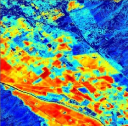
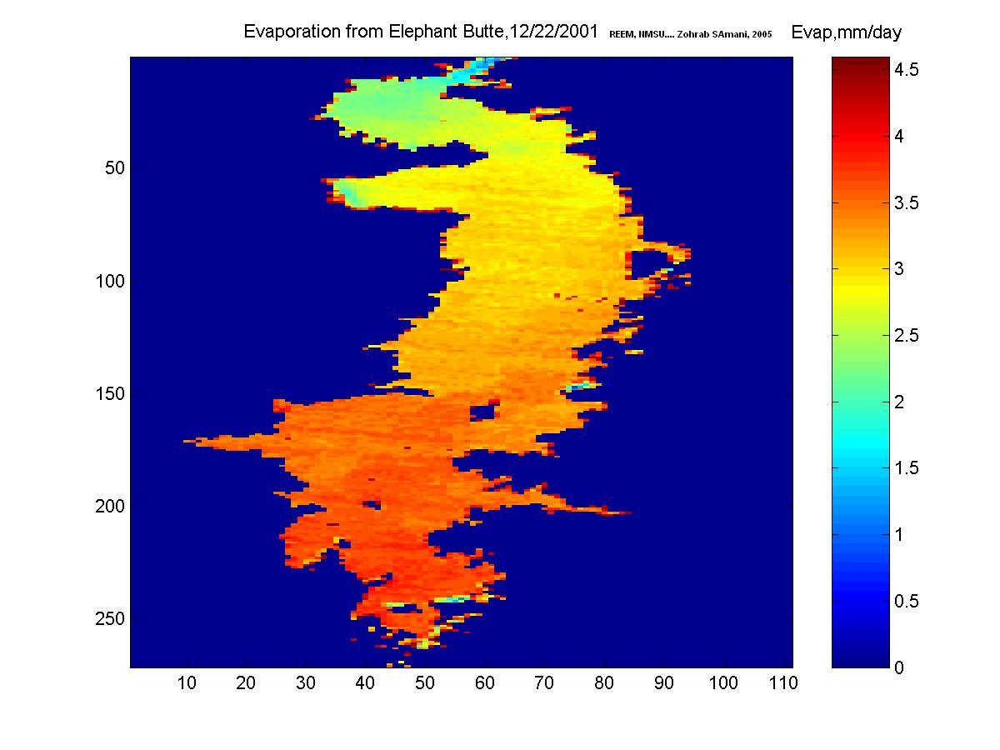

Remote Sensing
Research > Remote sensing | Energy | Water management | flow measurement | Evapotranspiration | International projects |
Remote Sensing
- Zohrab Samani, et al. (2009). Using remote sensing to evaluate the spatial variability of evapotranspiration and crop coefficient in the lower Rio Grande Valley, New Mexico. Jour. of Irrigation Science (2009) Online paper
- A.S. Bawazir, Z. Samani, et al. (2009). Using ASTER satellite data to calculate riparian evapotranspiration in the Middle Rio Grande Valley, New Mexico. Int. Jour. of Remote Sensing (2009) Online paper
- Zohrab Samani, et al. (2008). Using Remote Sensing to Improve Agricultural Water Management. Presentation slides
- Zohrab Samani, et al. (2007). Water Use by Agricultural Crops and Riparian Vegetation: An Application of Remote Sensing Technology. Jour. of Contemporary Water Research & Education (137), 8-13. Online paper
- Zohrab Samani, et al. (2007). Pecan Water Use in the Dona Ana County. Presentation slides
- Zohrab Samani, et al. Estimating Riparian ET through Remote sensing. Presentation slides
- On-Farm Irrigation Efficiency
- Alfalfa Water in LRG
- LRG Water Use for 2011
- Abstract: Estimating Crop Evapotranspiration from Satellite
{kind=link}
Estimating Crop Evapotranspiration from Satellite
Zohrab Samani, Max Bleiweiss, Simon Nolin and Rhonda Skaggs
Abstract
Crop evapotranspiration (ET) is a major component of the hydrologic system. The ET values are used in irrigation water management, water right allocation, hydrological modeling and water resource planning and management. Traditionally, ET has been estimated using crop coefficient and climatic parameters. Point measurement of ET can also be made through soil moisture monitoring, vapor flux measurement or energy balance using the eddy-covariance method. However, traditional methods will only provide point measurements of ET and does not account for spatial variability of ET in large scale. Recent advances in remote sensing have made it possible to develop regional maps of ET with high precision. An algorithm was developed to use the combination of satellite data, ground level weather stations and point measurements of ET, to estimate and develop regional ET maps. The Regional ET Estimation Model (REEM) is based on energy balance at the crop canopy. The model uses incidental values of NDVI, near infrared temperature and albedo, from satellites to calibrate the sensible heat flux equation.
The sensible heat flux equation is calculated daily and is modified spatially using well defined nodes in the watershed. The REEM based ET values were compared with direct measurement of ET in Pecan in Southern New Mexico. The comparison showed that the crop ET can be calculated from REEM model with good precision.
Online presentation slides
|

Mesilla |
|
|
 Evaporation from Elephant Butte Reservoir in NM, USA, Dec 22, 2001 |
|
| REEM calculates evaporation from lakes and other free water surfaces |

(c) Zohrab A. Samani